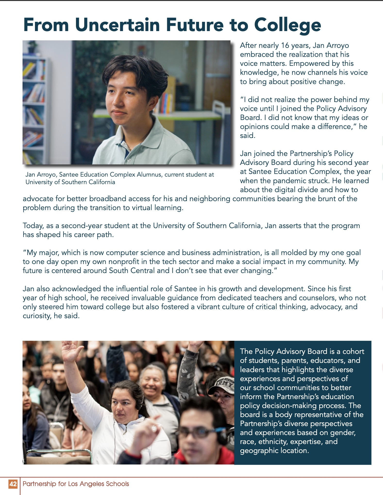

I built a CRM that connects Google Sheets and Gmail so outreach basically runs itself. It pulls fresh rows from Sheets, fills a template with merge fields, batches sends to stay under Gmail limits, retries failures, and logs results back to the sheet. With it we hit 15,000+ contacts, response rate lifted about 15%, and total send time dropped to roughly one-third across three committees. New campaign = new sheet + a template. Simple, fast, and the team kept using it after I handed it off.
Quokka Brew — Can Design Research & Iterations
We ran 60+ interviews then tested concepts with the 10-ft / 5-ft / 1-ft rule. Signal was clear: calmer neutrals read more “coffee,” the logo and health callouts need to read at 5 ft, and flavor cues should be dead simple at 1 ft. We benchmarked against Rise, La Colombe, and Starbucks and turned that into 3 MVP layouts plus variants the team could keep testing. My role was pulling the insights and pushing changes that actually show up on the can — bigger mark, clean info bands, and a flavor hierarchy you can catch fast. Open deck
Clear Clinical — Product Strategy & UX
Semester project focused on adoption. Interviews + competitive scan → a staged roadmap: nail the daily workflows first, then layer advanced features once the base is sticky. I framed trade-offs and laid out the first shippable version so a small team could move.
Mid deckFinal deck
EY Workshop — Design Thinking
I put together a quick, hands-on workshop for high school students — frame the problem, sketch, test. Kept it practical so they could run it on their own ideas after.
Policy Advocacy Day — Sacramento
Met with legislators to share student stories and push for youth programs. I prepped the team, aligned the asks, and made sure voices in our community got in the room.
Magazine Feature

A campus write-up on first-gen work, BTG projects, and why I like building with community partners. Nice to see the impact show up outside a resume line.